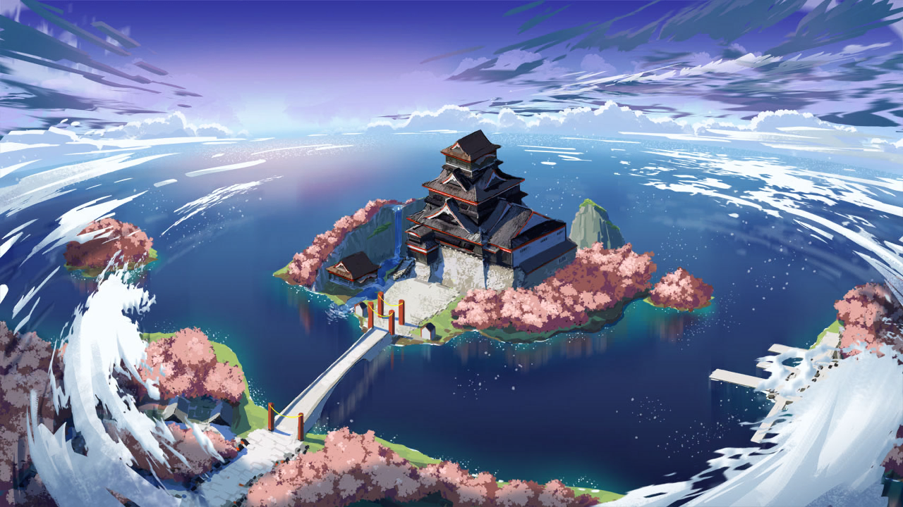
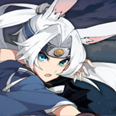
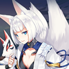
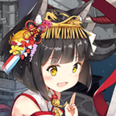
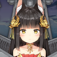
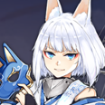
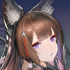

Последовательность
| Где то на севере Тихого океана. -- 28° 30' северной широты 177° 54' западной долготы | |||
|  | Хирью: | Мы готовы?! Противник контратакует! | |
| Акаги: | Первый и Второй авианесущие дивизионы, заряжайте свои торпедоносцы. Готовьтесь к антикорабельной атаке! | ||
|  | Кага: | Что?! Менять оборудование прямо сейчас?! Ни-сама, я не могу сделать это! Что если мы попадём под вражеские удары в момент когда мы не готовы?! |
|
| Сорью: | Множественные цели на высоте 2000! Это вражеские самолёты! | ||
| Акаги: | Они зашли сзади?! | ||
| Кага: | Чёрт! Отозвать истребители! Нам нужна защита от воздуха прямо сейчас! *Взрыв* Грррррр! |
||
| Акаги: | Кага! Кага! | ||
............. ..... Потерять бдительность.....в такой критический момент.... ... Прости. Похоже я не смогла оправдать твои ожидания.. ..... Амаги...сан.... ... |
| Амаги: | *смеётся* Шах и Мат | ||
| Кага: | Агрх! | ||
| Акаги: | Это была твоя десятая победа подряд! | ||
| Кага: | Ты играешь грязно...! Ты выманила моего Золотого Генерала! Это было не честно! | ||
| Амаги: | Ты слишком сосредоточена на атаке. Твоя судьба была решена в тот момент когда ты выдвинула Короля на центр поля. Давай просто сойдёмся на том что скрытно наступать, при этом делая вид что ты сидишь в глухой обороне, это очень эффективная стратегия. | ||
| Кага: | Посмотрите на неё, как самодовольно виляет хвостами... Тебе просто повезло застать меня врасплох! Я тебе покажу... Давай сыграем ещё одну игру! | ||
| *Играют ещё одну партию* | |||
| Кага: | Ааах! Чёрт возьми! | ||
| Акаги: | А вот и одиннадцатая победа подряд! | ||
| Амаги: | Боюсь, уже довольно поздно... Акаги, нам пора домой. Мне бы не хотелось мешать тренировкам Каги. | ||
| Акаги: | Конечно! | ||
| Кага: | Что? Сбегаешь потому что боишься наконец проиграть мне? | ||
| Амаги: | Вовсе нет. Через два дня Империя Сакуры проводит ежегодные военно-морские учения. Ты ведь не забыла об этом, правда? Кстати говоря, ты согласна с тем что в реальном бою мы более равны чем в настольной игре? | ||
| Кага: | Так и есть. Тогда мы проверим чей корабль современности самый мощный в реальном бою ! |
|  | Муцу: | Сестрёнка, я проверила всех участников этого года... и они все кажутся очень целеустремлёнными! Я так взволнована! | |
| Нагато: | Сколько можно тебе говорить не называть меня "сестрёнка" при посторонних?! |  | |
| Муцу: | Но ведь ты моя старшая сестра, почему я не могу называть тебя "Сестрёнка"? | ||
| Нагато: | *Вздыхает* ... Называй меня как хочешь... Завтра у нас тренировка... Надеюсь всё пройдёт хорошо... |
Воспоминание 1
| Нагато: | Я Нагато, флагманский корабль Объединённого флота! Я буду судить военно-морские учения в этом году! ...В эти неспокойные времена мы сталкиваемся с угрозами со всех сторон, не только со стороны хаоса, который вызывают Сирены, но и со стороны других сил по всему миру. И поэтому... ... сейчас как никогда мы все должны объедениться! И мы должны показать нашим врагам, что флот Империи Сакуры сильнее, чем когда либо прежде! *Флагман Объединённого флота и жрица Империи Сакура Нагато пристально обвела взглядом все корабли, присутствовавшие на военных играх.* Флагманский корабль победившей в военных играх этого года стороны будет назначен следующим флагманом Объединенного флота! |
||
Присутствующие: |
!!! |
||
|  | Кага(Линкор): | Нагато сама... следующий флагман?! | |
| Мицу: | Тишина! Сейчас я объявлю составы команд для учений этого года! Красная команда: Линейный крейсер "Амаги"... Синяя команда: Линкор Кага... |
||
| Кага(Линкор): | Какая прелесть! Амаги, ты готова к реваншу? | ||
| Нагато: | Военные учения этого года определят дальнейший курс для нашего Объединенного флота. Я хочу, чтобы вы все помнили об этом. Я хочу, чтобы вы продемонстрировали, всё на что вы способны, и боролись в полную силу! ...Теперь, начнём же учения Объединённого флота! |
Воспоминание 2
| Хатаказэ: | Что?! Что флагман команды "Красных" делает на линии фронта, в рядах авангарда? | ||
| Амаги: | Учения - не место для бездельников. Кага может начать действовать непредсказуемо, если я не покажусь. |  | |
| Хатаказэ: | Ты должно быть слишком уверена в себе, что бы выйти вперёд к линии фронта? Это же не просто игра. | ||
| Амаги: | Возможно. Мне правда нравится придумывать новые стратегии, но и повоевать я способна. | ||
| Хатаказэ: | Мда.. Я уверена, что вам повезло, это всего лишь учения, и я не настоящий ваш враг в реальном бою. Но всё же я не позволю вам продвинуться дальше, как и поступили бы враги. Если вы хотите пройти вам придётся победить меня! | ||
| Амаги: | Тогда давай устроим хороший бой. *Хихикает* |